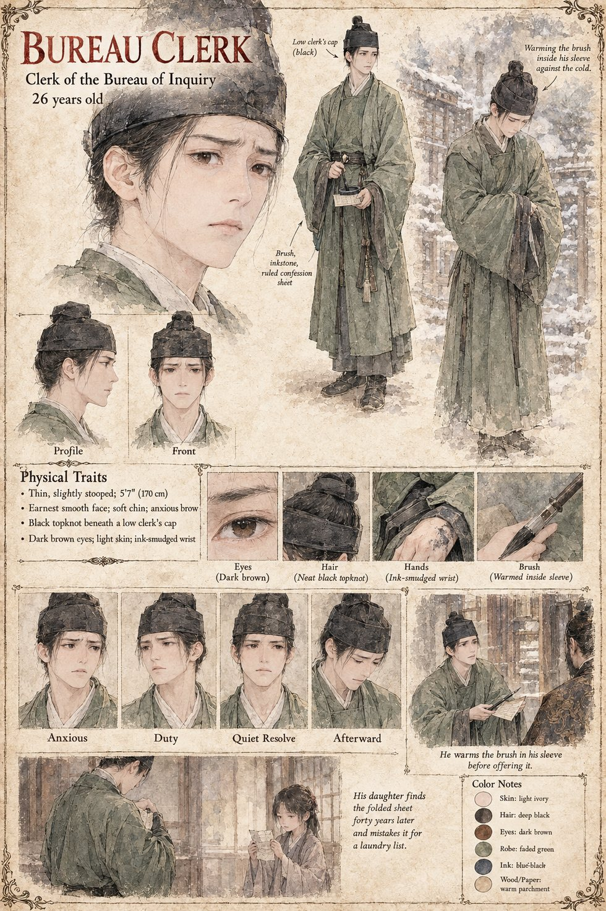

The Bureau Clerk
Clerk of the Bureau of Inquiry · unnamed · about 26 years old by his sheet
A decent young man of the Bureau of Inquiry, who stands at Kanemichi's shoulder at dawn on the twenty-sixth of Jorren, at Mikusa, carrying a brush and a confession ruled and inked in everything but the signature. He puts the matter as it has been put to everyone before him: a signed confession is a clean death at the Southern Gate, and the Stone is the Stone. He holds out the brush, and it is a good brush, warmed in his sleeve against the cold. The rice-warden reads the sheet, ruled with real skill, every column square. It is the first time in thirty years of keeping other men's grain that anyone has offered him the chance to sign a figure he has not counted, and he finds that he cannot.
He takes the brush back. When the rice-warden has crossed the gravel and put out his left hand, the clerk takes up the unsigned sheet and looks for a moment at the ruled columns and the wide clean space where a name would have gone, then folds it into thirds and puts it in his sleeve, as one puts away a letter that has not been answered. It is found among his effects forty years later by a daughter, who takes it for a laundry list. The manuscript does not name him or give his age or looks. The sheet's twenty-six years, thin stooped build, soft chin and anxious brow, and its ink-smudged wrist, are its own.